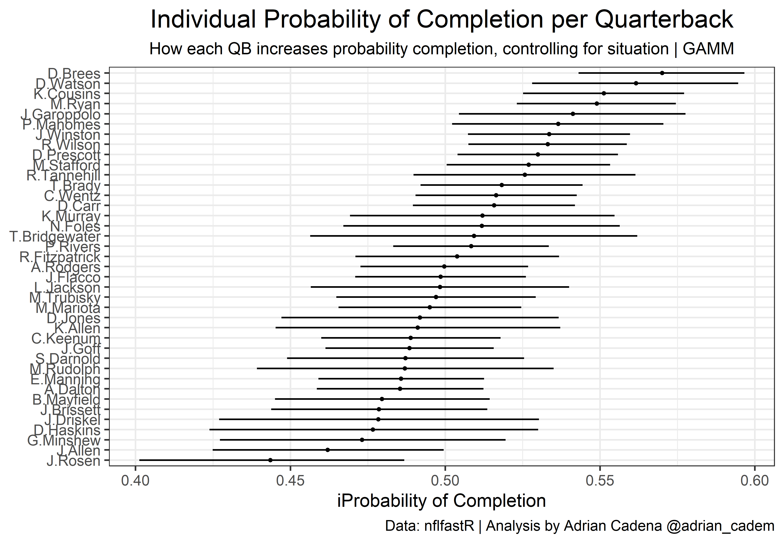
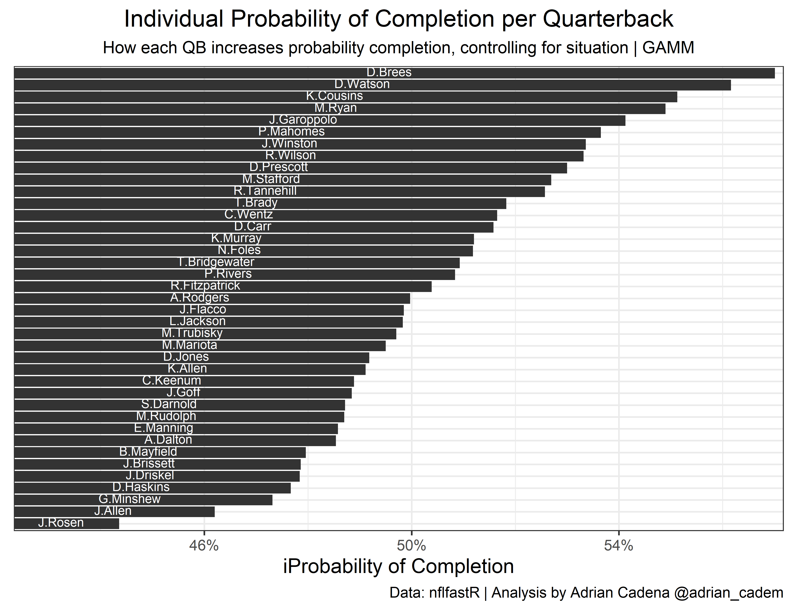

Case study how to leverage Generalized Additive Mixed Models (GAMM) to estimate the individual probability of completion per Quarterback as a random effect.
Michael Lopez posted not long ago a great article explaining how Generalized Additive Models (GAMs) are a good way to measure non-linear effects of explanatory variables x on response variable y.
Lately, I’ve been playing around with linear and logistic mixed-effects models, so I thought about combining these with GAMs to estimate the probability of completion per Quarterback while accounting for non-linearities, especially on air yards.
To learn more about Logistic Mixed Effects I recommend https://stats.idre.ucla.edu/r/dae/mixed-effects-logistic-regression/
For a football case application of GAMs, nothing like M.Lopez’ post itself https://statsbylopez.netlify.app/post/plotting-air-yards/
We will be using the gamm4 library to fit our model.
library(gamm4)
library(dplyr)
library(purrr)
library(ggplot2)
library(ggthemes)
library(scales)We’ll be working with data from 2016 to 2019. Because the NFL started to matter in 2016 when Dak Prescott was drafted.
GAMMs can take a while to run since they also perform cross-validation. So I’ll do my best to filter-out data as much as possible without affecting results. Hold on.
# Some stuff to filter later on
npass <- pbp %>%
dplyr::filter(
play_type == "pass",
season_type == "REG"
) %>%
mutate(
play_in_19 = if_else(season == 2019, 1, 0)
) %>%
group_by(passer_player_id) %>%
dplyr::summarise(
num_plays = n(),
last_seas = max(season),
plays_in_19 = sum(play_in_19)
)
pbp2 <- merge(pbp, npass, by = "passer_player_id", all.x = T, no.dups = T)
# Mutations/data prep
pbp_mut <- pbp2 %>%
dplyr::filter(
season_type == "REG",
wp <= .85,
wp >= .15,
play_type == "pass",
!is.na(complete_pass),
penalty == 0,
num_plays >= 200
) %>%
dplyr::mutate(
ayard_is_zero = if_else(air_yards == 0, 1, 0),
era1 = if_else(season %in% 2014:2017, 1, 0),
away = if_else(home_team == posteam, 0, 1),
id = passer_player_id,
# fixing some weird bugs I found with names bugs don't affect model, but mess with plot
passer_player_name = if_else(passer_player_name == "Jos.Allen", "J.Allen",
if_else(passer_player_name == "R.Griffin", "R.Griffin III",
if_else(passer_player_name == "Matt.Moore", "M.Moore",
if_else(passer_player_name == "G.Minshew II", "G.Minshew", passer_player_name)
)
)
)
) %>%
dplyr::select(
id, passer_player_name, era1, season, away, wind, temp, complete_pass,
air_yards, qb_hit, ayard_is_zero, yardline_100, ydstogo, down,
plays_in_19, yardline_100
)
# To map id's and Quarterback names
names <- pbp_mut %>%
group_by(id) %>%
dplyr::summarise(
Quarterback = unique(passer_player_name),
last_seas = max(season),
plays_in_19 = unique(plays_in_19)
)It would be a good idea to add non-linear components to ydstogo and yardline_100, but I don’t want to slow down the model too much. If you have the time to do it, go for it! just do s(ydstogo) and s(yardline_100).
family = binomial(link='logit') to make it a logistic binomial regression.id since we want to look at every QB intercept.nACG = 0 to speed up the process, it technically sacrifices accuracy, but for this exercise is no big deal.This will take around 5 minutes to run, depending on your computer.
gam_model <- gamm4(
complete_pass ~
era1 +
ydstogo +
yardline_100 +
down +
away +
qb_hit +
ayard_is_zero +
s(air_yards),
random = ~ (1 | id),
data = pbp_mut,
nAGQ = 0,
control = glmerControl(optimizer = "nloptwrap"),
family = binomial(link = "logit")
)gamm4 returns two different summaries, one for the Generalized Additive part and one for the Mixed-Effects part. Feel free to look at the coefficients. You can also map IDs to the player’s name. I’ll do that later on. If interested, just copy the code.
First, we will use broom.mixed to retrieve the random intercepts as well as their confidence intervals. We will also create a function to transform log-ods into probabilities. Just to make the plot easier to read.
Then we map ids with player names using merge() and sort the data frame by descending estimate.
Finally, we mutate confidence intervals and transform log-odds to probabilities. I am adding a threshold on the number of plays in 2019 just to make the plot clearer.
# Retreive estimates and standard errors
est <- broom.mixed::tidy(gam_model$mer, effects = "ran_vals") %>%
dplyr::rename("id" = "level") %>%
dplyr::filter(term == "(Intercept)")
# Function to convert logit to prob
logit2prob <- function(logit) {
odds <- exp(logit)
prob <- odds / (1 + odds)
return(prob)
}
# Prepare data for plot
plot <- merge(est, names, by = "id", all.x = T, no.dups = T) %>%
arrange(estimate) %>%
mutate(
lci = estimate - 1.96 * std.error,
uci = estimate + 1.96 * std.error,
prob = logit2prob(estimate),
prob_uci = logit2prob(uci),
prob_lci = logit2prob(lci),
) %>%
dplyr::filter(
plays_in_19 >= 100
)The first plot includes the intercept estimate as well as confidence intervals.
plot %>%
filter(
last_seas == 2019
) %>%
ggplot(aes(x = factor(Quarterback, level = Quarterback), prob)) +
geom_point(size = .7) +
geom_linerange(size = .5, aes(
ymin = prob_lci,
ymax = prob_uci
)) +
coord_flip() +
theme_bw() +
labs(
y = "iProbability of Completion",
title = "Individual Probability of Completion per Quarterback",
subtitle = "How each QB increases probability completion, controlling for situation | GAMM",
caption = "Data: nflfastR | Analysis by Adrian Cadena @adrian_cadem"
) +
theme(
plot.title = element_text(size = 15, hjust = .5),
plot.subtitle = element_text(size = 10, hjust = .5),
axis.title.y = element_blank(),
) #+ ggsave('plot_gamm1.png', dpi=1100,width = 20, height = 15, units = "cm") 
The second plot is a little easier to read and looks nice in terms of aesthetics. We are only adding the estimated probability intercept, no confidence interval.
plot %>%
filter(last_seas == 2019) %>%
ggplot(aes(x = factor(Quarterback, level = Quarterback), prob)) +
geom_col(fill = "grey20") +
geom_text(aes(label = Quarterback, y = (((prob - .43) * .5)) + .43), color = "white", hjust = 1, size = 2.6, vjust = 0.3) +
coord_flip() +
theme_bw() +
labs(
y = "iProbability of Completion",
title = "Individual Probability of Completion per Quarterback",
subtitle = "How each QB increases probability completion, controlling for situation | GAMM",
caption = "Data: nflfastR | Analysis by Adrian Cadena @adrian_cadem"
) +
scale_y_continuous(limits = c(.43, .565), oob = rescale_none, labels = scales::percent_format(accuracy = 1)) +
theme(
plot.title = element_text(size = 14, hjust = .5),
plot.subtitle = element_text(size = 10, hjust = .5),
axis.title.x = element_text(size = 12),
axis.title.y = element_blank(),
axis.text.y = element_blank(),
axis.ticks.y = element_blank(),
) +
ggsave("plot_gamm2.png", dpi = 1100, width = 20, height = 15, units = "cm")
When trying to predict the probability of a pass being completed, the main drivers are factors such as air yards, yard line, yards to go, down, etc. Each one of these variables increases or decreases the chances of a pass being completed. However, what is the starting probability of a pass being completed before we account for any of those variables? In other words, what is the intercept?
By using the passer as a random variable, we can assign an intercept for each Quarterback. This measures the individual effect on pass completion that each QB has. The higher the intercept, the higher the probability of a pass being completed, solely because of who is throwing the pass. This is an interesting alternative to CPOE because just like Expected Completion, it accounts for situational variables. However, this is just an inferential exercise, CPOE has proven to be the better predictive measure.
The purpose of this post is to invite people to play around with GAMMs. I didn’t want to break anyone’s computer so I kept it simple. Many variables could be added to the model to make it better, while also adding smoothing factors to some of the existing variables.
There are many other applications for GAMMs in football analysis, and I’m excited to see what you guys come up with. Reach out to me with any questions!
If you see mistakes or want to suggest changes, please create an issue on the source repository.